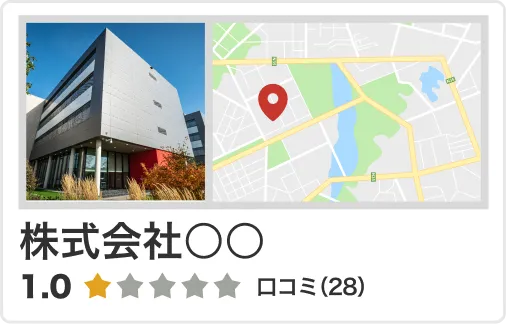
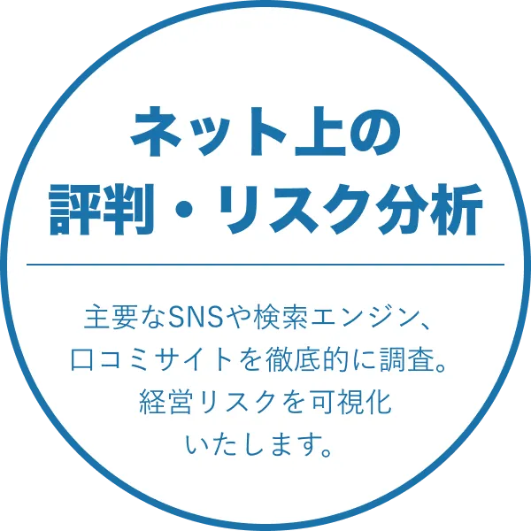
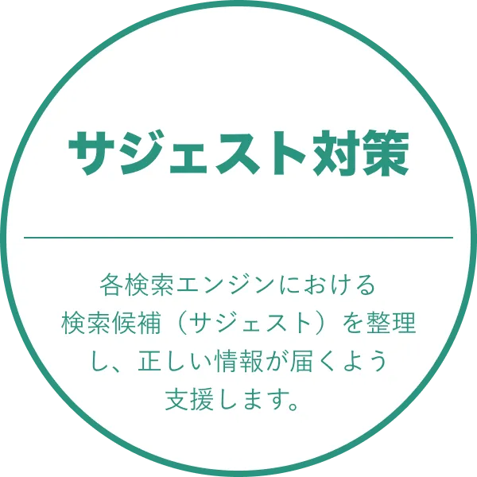
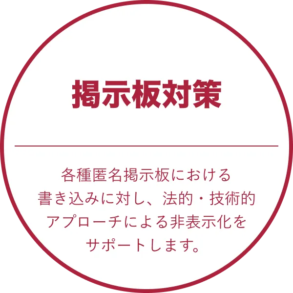
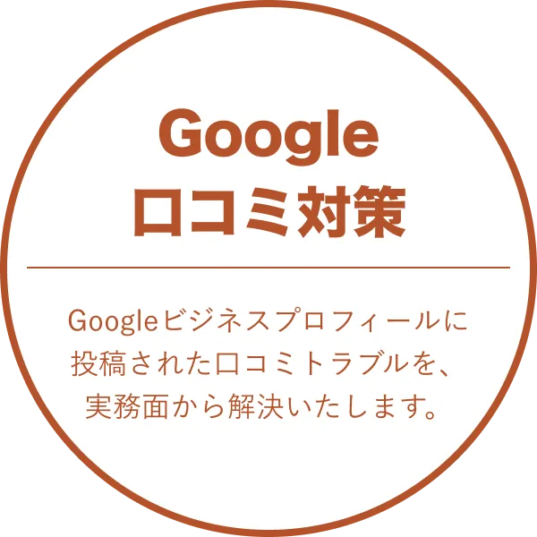

ネット上の風評から
会社の信用を守る
専門家です。
法と各プラットフォーム規約に則り、悪質な口コミの是正と再発防止を支援します。
サービス内容
主要なSNSや検索エンジン、口コミサイトを徹底的に調査し、経営リスクを可視化します。

Googleビジネスプロフィールに投稿された口コミトラブルを、実務面から解決いたします。

各検索エンジンにおける検索候補（サジェスト）を整理し、正しい情報が届くよう支援します。

各種匿名掲示板における書き込みに対し、法的・技術的アプローチによる非表示化をサポートします。




こんな方に選ばれています

応募前に必ず口コミがチェックされ、評判一つでエントリー数が激減してしまうのが人材業界の特徴です。
現場の実態とかけ離れた書き込みを是正し、本来獲得できるはずの優秀な求職者を逃さない採用環境を取り戻します。

タレントやモデル、インフルエンサーへの根拠のない憶測は、放置すると取り返しのつかない被害に繋がります。
当センターでは悪評の早期発見から非表示化手続きまで、迅速に対応。
大切な所属者が安心して活動できる環境を構築いたします。

事実無根の書き込み一つで、数千万円の商談が白紙になりかねないのが不動産業界の大きな特徴です。
実態と異なる悪評を整理し、検討中のお客様が迷わず相談や内見へ進めるようサポートします。

医療機関は、患者様や退職者による感情的な書き込みが起きやすいのが特徴です。
医療の質とは無関係な悪評を整理し、本来の業務に専念できる環境を整えます。
医療機関特有のデリケートな問題解決は、当センターにお任せください。
弁護士、税理士、司法書士、行政書士などの専門職は、業務の性質上、不当な逆恨みを受けやすい傾向にあります。
皆様の看板を守るため、当センターでは証拠の精査から論理的な是正手続きまでを徹底して行います。
競合他社による組織的な攻撃や、元従業員の事実無根な批判が書き込まれがちな業種です。
「書かれやすい業種」だからと諦める必要はありません。
社員の士気低下や採用難を防ぐため、当センターがサポートいたします。


会社情報
- 法人名
- 一般社団法人口コミ対策センター
- 代表理事
- 佐藤 朝亮
- 所在地
- 〒104-0053 東京都中央区晴海3-16-1
- 設立
- 2025年2月1日
- 法人番号
- 6010005039630
- 事業内容
- ・インターネット誹謗中傷対策
・権利侵害抑止事業
・SEO/SERPs適正化支援
・デジタルレピュテーション・インテグリティ事業
・社会動向データ・アナリティクス事業